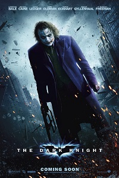
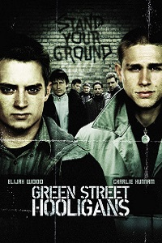
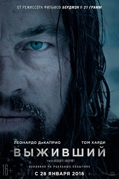

Добро пожаловать на сайт креативного, высокомыслящего, подающего надежды и скромного студента. Меня зовут Шмаков Максим Владимирович, я родился 29 ноября 1997 года в Мари-Туреке, там же закончил 11 классов. Далее я поступил в Приволжский Государственный Технологический Университет на специальность "Проектирование зданий", отучился там год и понял что это, так скажем "не мое". Поэтому я перевелся на более перспективную и сложную специальность "Програмная инженерия", на которой в данный момент и обучаюсь.
Тёмный рыцарь

Бэтмен поднимает ставки в войне с криминалом. С помощью лейтенанта Джима Гордона и прокурора Харви Дента он намерен очистить улицы от преступности, отравляющей город. Сотрудничество оказывается эффективным, но скоро они обнаружат себя посреди хаоса, развязанного восходящим криминальным гением, известным испуганным горожанам под именем Джокер.
Хулиганы

Студент факультета журналистики Мэтт Бакнер отчислен из Гарварда за преступление, которого он не совершал. Его многообещающая карьера пошла коту под хвост, его будущее выглядит суровым, и он в поисках убежища бежит в Лондон к своей замужней сестре Шэннон.
Выживший

Охотник Хью Гласс серьезно ранен на неизведанных просторах американского Дикого Запада. Товарищ Хью по отряду покорителей новых земель Джон Фицжеральд предательски оставляет его умирать в одиночестве. Теперь у Гласса осталось только одно оружие — его сила воли. Он готов бросить вызов первобытной природе, суровой зиме и враждебным племенам индейцев, только чтобы выжить и отомстить Фицжеральду.
Варкрафт

Веками магия и неприступные стены защищали людей от любых напастей. Но древнее зло, побежденное и забытое тысячелетия назад, пробудилось.